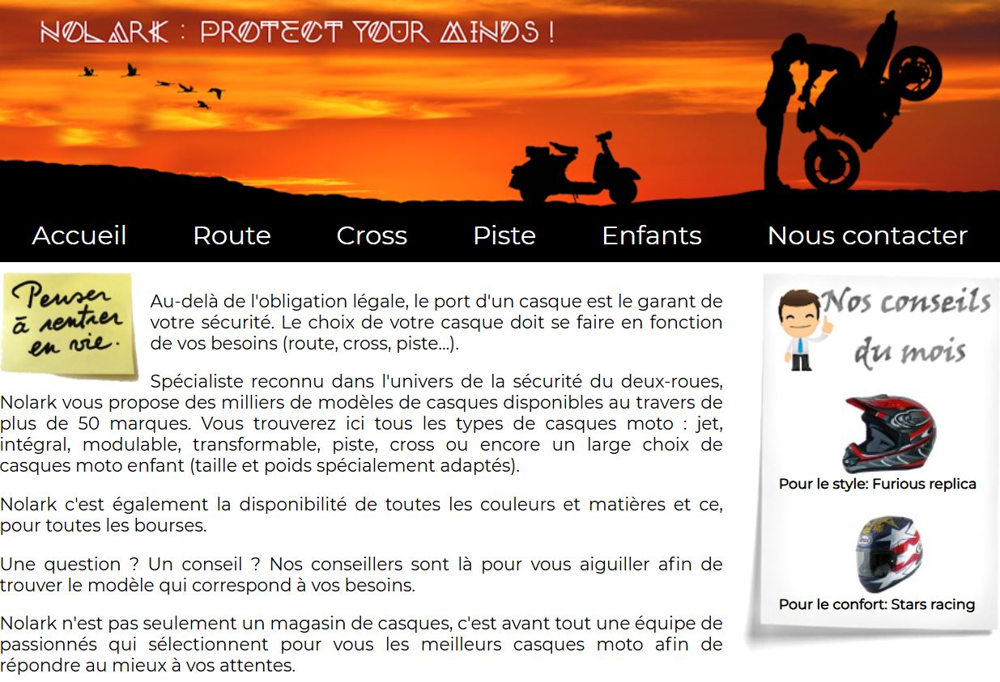

Nolark : Site web de vente de casques en ligne
- Langages utilisés : HTML, CSS et JavaScript
- IDE : Apache NetBeans
 Nolark est un site web vitrine fictif spécialisé dans la vente de casques qui nous a permis de nous familiariser avec la création d’un formulaire de contact (envoi et contrôle des champs), le Responsive Web Design (site web dont la conception lui permet de s’adapter à tout type d’écran), la gestion des media queries (aussi appelé “requêtes média” permettent de modifier l’apparence d’un site ou d’une application en fonction du type d’appareil et de ses caractéristiques), la gestion de version et l'utilisation d'API web (pour “Application Programming Interface” ou “Interface de Programmation d’Application” est une interface logicielle permettant de “connecter” un logiciel/service à un autre logiciel/service afin d’échanger des données et des fonctionnalités).
Dans notre cas, on a utilisé une API web (Map Quest API) qui nous a permis d’intégrer
des cartes afin d'afficher la localisation de l'enseigne Nolark.
Enfin, nous avons été initiés au Javascript et aux tests unitaires sur Nolark par
la création d'un simulateur de prime pour chauffeurs livreurs et commerciaux.
Sont venus s'ajouter ensuite les tests unitaires à travers un TP dans lequel nous devions créer un test d'alcoolémie prenant en compte le sexe de la personne et le nombre de verre-type consommés.
Compétences du référentiel du BTS
1.1 – Gérer le patrimoine informatique
Mise en place de l’environnement de développement et conception de l’architecture du projet.
1.3 – Développer la présence en ligne de l’organisation
Réalisation et mise en forme d’un site vitrine en vue d’optimiser l’expérience utilisateur.
1.4 – Travailler en mode projet
Planification des tâches et premières opérations de débogage pour assurer la maintenabilité de l’application.
1.5 – Mettre à disposition des utilisateurs un service informatique
Optimisation de l’interface afin de proposer un service ergonomique, fluide et accessible.
1.6 – Organiser son développement professionnel
Renforcement des compétences techniques en HTML, CSS et Responsive Web Design.
GSB : Galaxy Swiss Bourdin
- Langages utilisés : HTML, CSS, JavaScript et PHP
- SGBD : MySQL
- Outil de gestion BDD : MySQL Workbench
GSB est un laboratoire pharmaceutique issu de la fusion
entre Galaxy (USA) et Swiss Bourdin (Europe).
Son objectif est d'optimiser la gestion des frais engagés par les visiteurs médicaux.
Voici les différentes tâches que l'on devait réaliser :
- Tâche 1 : Validation d'une fiche de frais
- Tâche 2 : Suivi du paiement des fiches de frais
- Tâche 3 : Production de la documentation
- Tâche 4 : Gestion du refus de certains frais hors forfait
- Tâche 5 : Sécurisation des mots de passe stockés
- Tâche 6 : Optimisation du calcul de l'indemnité kilométrique
- Tâche 7 : Génération d'un état de frais au format PDF
- Tâche 8 : Génération unique de PDF dans une démarche écoresponsable ("Green-IT")
Fonctionnement clés :
- Authentification : L’accès à l’application est réservé aux utilisateurs autorisés.
- Saisie des frais : Les visiteurs peuvent déclarer leurs frais, qu’ils soient forfaitaires ou hors-forfait.
- Validation : Les comptables examinent les frais saisis et décident de les valider ou non, tout en assurant un suivi du processus de remboursement.
- Suivi des remboursements : Chaque fiche de frais est tracée, et les visiteurs ont la possibilité de consulter l’historique de leurs paiements sur une période d’un an.
En somme, GSB nous a permis d'appréhender différentes notions
de base, à savoir : une architecture MVC (Modèle Vue Contrôleur),
mettre en œuvre les bonnes pratiques de développement utilisés par le
service informatique de GSB pour encadrer le développement d’applications
en PHP et en faciliter la maintenance.
Ce projet nous a également permis
d’apprendre à travailler en collaboration et à utiliser les différents environnements
de développement tels qu'Apache NetBeans et MySQL Workbench.
Compétences du référentiel du BTS
1.1 – Gérer le patrimoine informatique
Assurer la maintenance des bases de données, contrôler la sécurité des accès et veiller à la performance du système.
1.2 – Répondre aux incidents et demandes d’évolution
Correction des erreurs signalées, amélioration des processus existants et intégration de nouvelles fonctionnalités en réponse aux besoins.
1.4 – Travailler en mode projet
Collaboration selon une méthode agile, rédaction d’une documentation technique et suivi des modifications tout au long du projet.
1.5 – Mettre à disposition des utilisateurs un service informatique
Création et déploiement d’une application fiable et simple d’utilisation pour faciliter la gestion des frais médicaux.
1.6 – Organiser son développement professionnel
Renforcement des compétences en PHP et approfondissement des notions de sécurité dans le développement web.
CGB : Crédit Général Bank (Crédit Général GSB)
- Langage utilisé : Java
- Framework : Spring (Spring Boot et Spring Data JPA (Java Persistence API))
- Gestion des dépendances : Apache Maven
- Application : Mise en place d’une API REST dédiée aux virements bancaires automatisés et sécurisés pour les entreprises.
- Base de données : Utilisation de H2 durant le développement.
- Sécurité : Protocole d’autorisation via OAuth2 et validation des IBAN grâce à Apache Commons Validator.
- Tests : Réalisation de tests unitaires avec JUnit et MockMvc
 Le Crédit Général Bank est une banque française fictive spécialisée
dans les services financiers et les solutions technologiques pour les entreprises.
Le Crédit Général Bank est une banque française fictive spécialisée
dans les services financiers et les solutions technologiques pour les entreprises.
Parmi ses clients, on trouve LMHV, BATIPRO, mais aussi Galaxy Swiss Bourdin (GSB).
GSB utilise les services de CGB afin de gérer les paiements des visiteurs médicaux.
Voici les missions que l'on devait réaliser :
- Mission 1 : Etude et configuration de l'API de virement existante
- Mission 2 : Conformité IBAN
- Mission 3 : Traitement des Lots (virements en lots)
- Mission 4 : Notification et rapport
- Mission 5 : Sécurisation
Compétences du référentiel du BTS
1.1 – Gérer le patrimoine informatique
Déploiement et maintenance de l’API de virement, gestion des bases de données et protection des données sensibles.
1.2 – Répondre aux incidents et demandes d’évolution
Identification des anomalies liées aux transactions, optimisation des performances et ajout progressif de nouvelles fonctionnalités.
1.4 – Travailler en mode projet
Organisation du travail selon une méthode agile, suivi rigoureux des évolutions et coordination des tâches en équipe.
1.5 – Mettre à disposition des utilisateurs un service informatique
Mise à disposition et mise à jour de l’API REST, garantissant un service sécurisé et opérationnel pour les entreprises.
1.6 – Organiser son développement professionnel
Renforcement des compétences sur les technologies Spring Boot et OAuth2 en vue d’un développement fiable et performant.